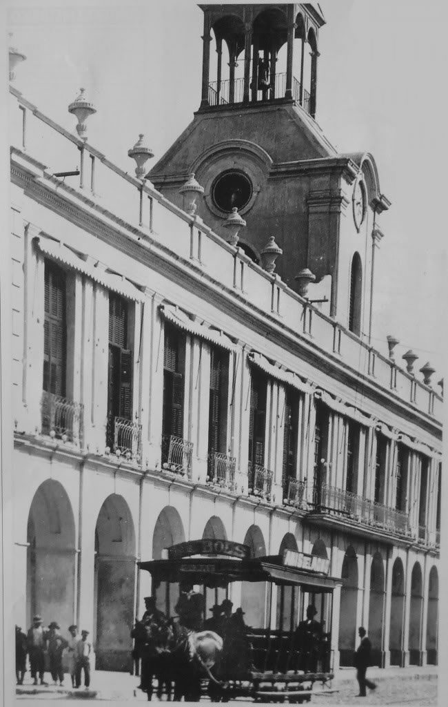
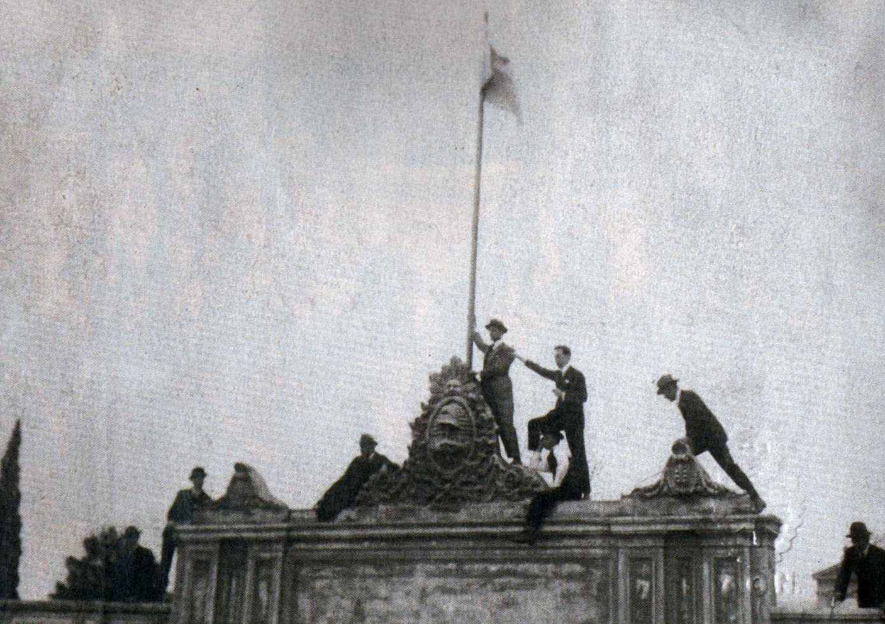
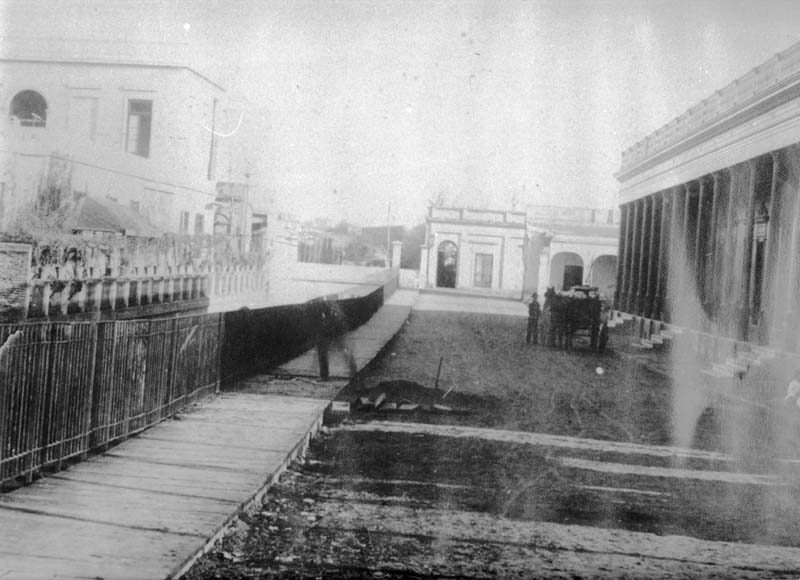
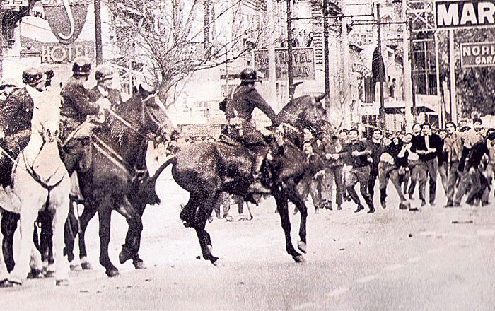

Кордобу основали не там, где велели. Вице-король Франсиско де Толедо приказал Херонимо Луису де Кабрере ставить город севернее, в долине Сальты, а тот 6 июля 1573 года заложил его здесь и назвал Córdoba de la Nueva Andalucía. Местная пресса любит рассказывать это как акт непослушания, но почему Кабрера так решил, на самом деле неизвестно. Среди версий есть даже такая: лагуну Мар-Чикита приняли за морской залив и надеялись выйти к Атлантике.
Через четыре года центр перенесли на другой берег реки, и Лоренсо Суарес де Фигероа начертил план на 70 кварталов. В 1599 году пришли иезуиты, и из их коллегии в 1613 году вырос университет, старейший в Аргентине. От него город получил прозвище Ла-Докта, то есть Учёная.
Учёный город при этом стоял на торговом пути из Буэнос-Айреса в серебряный Потоси. В 1658 году путешественник насчитал здесь около 400 домов и записал, что город продаёт 28–30 тысяч мулов в год.
Дальше учёность и бунт идут рядом. В 1918 году студенты старого университета подняли восстание против его порядков, и Университетская реформа разошлась по всей Латинской Америке. В XX веке Кордоба стала промышленной: в 1927 году открыли авиазавод, где позже построили реактивные истребители Pulqui, а в 1956-м на заводе Санта-Исабель собрали первый джип IKA. Рабочие этих заводов и студенты в мае 1969 года вместе вышли на улицы — это восстание вошло в историю как Кордобасо.
У города есть и своя музыка. 4 июня 1943 года на радио LV3 впервые выступил Cuarteto Leo, и с этого дня отсчитывают жанр куартето. В декабре 2025 года ЮНЕСКО внесла куартето Кордобы в список нематериального наследия человечества.
Центр
Исторический центр — одновременно музей и действующий университетский квартал. Собор, Кабильдо и иезуитский квартал стоят в нескольких минутах друг от друга, а между ними каждый день ходят студенты и школьники Монсеррата.
Гуэмес — первый рабочий квартал города. Сюда, на узел дорог с запада провинции, приходили погонщики мулов и повозки; в 1862 году для них открыли площадь, ставшую Plaza de las Carretas. Селились итальянцы, испанцы, выходцы с Ближнего Востока. По словам краеведа Маркоса Каррисо, в 1841 году больше половины жителей Кордобы были афроаргентинцами, и многие жили именно здесь.
С 1980-х Гуэмес превратился в квартал ремесленников и блошиного рынка. В 1933 году на углу улиц Бельграно и Ачаваль-Родригес на митинге социалистов застрелили депутата Хосе Гевару.
Нуэва-Кордова задумана в конце XIX века как расширение города к югу. Предприниматель Мигель Крисоль сделал её осью широкий проспект с особняками — нынешний Иполито-Иригойен. Сегодня это студенческий квартал: бары, копицентры, книжные и кирпичные высотки, которые здесь строят с 1970-х.
До 1910 года район назывался Pueblo La Toma — по водозаборам на реке Суквии. 6 сентября 1910 года, к столетию Хуана Баутисты Альберди, его переименовали. Сейчас это самый населённый район города; больница Клиникас дала ему прозвища Barrio Clínicas и «район докторов».
Район назван по старому особняку семьи Каррерас — теперь в нём центр современного искусства в парке Шато. По району и стадион в народе зовут просто «Шато».
Под колониальной ратушей нашли тюремные камеры, а соседний дом полвека назад был центром пыток.
Первое Кабильдо в 1588 году было глинобитным домом под соломенной крышей. Нынешнее здание достроили в 1786 году, при губернаторе маркизе де Собремонте. Это была ратуша, суд и тюрьма сразу, а до 1989 года здесь сидела полиция провинции.
В том же 1989 году, когда здание вернули городу, под ним на глубине около 4 метров нашли замурованные камеры XVIII века. Специалисты считают, что в них временно держали заключённых. Версия, что это были камеры для приговорённых к смерти, остаётся предположением.
Подвалы породили и главную городскую легенду: рассказывают, что иезуиты прорыли под центром туннели между своими церквями и монастырями. О ней писали туристические издания и сняли документальный фильм. Муниципалитет, который сам водит экскурсию по подземельям, отвечает прямо: туннелей в Кордобе не было, а подземные постройки — были.
Рядом, вплотную к Кабильдо, в переулке Санта-Каталина, стоят два дома, где с 1974 по 1983 год работал D2 — разведотдел полиции провинции и тайный центр заключения. Через него людей ещё и перераспределяли по другим центрам, поэтому полного числа прошедших через D2 нет. С 2006 года здесь Архив памяти провинции.

1890-е · Кабильдо с часовой башней, которую снесли в 1912 году
Присмотрись
Сравни здание с фото: часовой башни над аркадой больше нет. Соседний собор начали строить в 1582 году, а освятили в 1706-м; колокольни добавили только в 1787-м.
Потолок иезуитской церкви — это корабль, перевёрнутый вверх килем.
Квартал иезуитов внесён в список Всемирного наследия ЮНЕСКО в 2000 году вместе с пятью иезуитскими эстансиями провинции. В нём церковь Компании Иисуса, Капилья-Доместика, старое здание университета и Колехио Монсеррат.
Деревянный свод церкви Компании устроен как корпус корабля, перевёрнутый вверх дном. Его приписывают брату-иезуиту Фелипе Лемеру, бывшему корабельному мастеру, — бельгийцу или, по другим источникам, фламандцу или французу. Туристическая пресса добавляет красивую деталь: кедр для свода иезуиты привезли из своих миссий в Парагвае, а брёвна сплавляли по рекам индейцы. Документа об этом нет.
Университет основан 19 июня 1613 года иезуитами при поддержке епископа Эрнандо де Трехо-и-Санабрии — поэтому его до сих пор зовут Casa de Trejo. Выдавать степени он получил право только в 1621–1622 годах.
15 июня 1918 года студенты ворвались в старый Ректорат, где выбирали ректора, и сорвали выборы. Через шесть дней вышел манифест Деодоро Роки со словами «Córdoba se redime» — «Кордоба искупает себя». С него началась Университетская реформа.
Колехио Монсеррат, иезуитская школа 1687 года, девочек приняла только в 1998 году — после захватов здания и судов. Первые выпускницы вышли из него в 2005-м.

1918 · Студенты занимают университет во время Реформы
Присмотрись
В церкви Компании подними голову: рёбра свода похожи на шпангоуты корабельного корпуса.
Театр трижды переименовывали вслед за сменой власти.
Театр открылся 26 апреля 1891 года как Teatro Rivera Indarte, по проекту Франческо Тамбурини. В 1950 году его назвали в честь освободителя Сан-Мартина, в 1956-м, после свержения Перона, вернули старое имя, а с 1973 года он снова носит имя Сан-Мартина.
Внутри зал на 1077 мест с четырьмя ярусами лож. Пол партера механически поднимается до уровня сцены: убрав кресла, зал превращали в танцевальный. Оригинальная сценическая машинерия сохранилась до сих пор.
Музыка, которая началась с одного радиоэфира в 1943 году и дошла до списка ЮНЕСКО.
Музей открыт в 2021 году в бывшем здании пенсионной кассы на углу Колон и Ривера-Индарте. Маршрут по нему идёт по хронологии — от иммигрантов к звёздам жанра.
Ритм куартето, «тунга-тунга», придумала Леонор Марсано, дочь основателя Cuarteto Leo. Родилась она, однако, не в Кордобе, а в провинции Санта-Фе, в 1921 году.
Присмотрись
Обложки первых 700 дисков жанра и уголок Родриго Буэно — с перчатками из Луна-Парка.
Тихий каменный канал — память о ночи, когда ручей убивал.
Ла-Каньяда — ручей длиной около 28 километров; в городе это 3 километра канала в каменных берегах, с мостами и деревьями типа над водой.
Тихий ручей не раз становился смертельным. В феврале 1671 года паводок унёс 14 жизней, и после этого построили кальканто — защитную стену из речных голышей на извести. В ночь на 20 декабря 1890 года, около двух часов, Каньяда разлилась снова; по газетам того времени, погибли около 200 человек.
Нынешнее каменное русло — ответ на паводки 1939 года. Работы начались 4 июля 1944 года, и под новыми стенами исчезли прежние мостки и сады вдоль ручья.

XIX век · Шаткий мост через Каньяду на улице Колон
Присмотрись
Сравни с фото XIX века: тогда через ручей вели шаткие мостки, сейчас — каменные мосты.
Дом на Фруктуосо-Ривера построили в 1914 году, и его угол вытянут, как нос корабля. Хозяином был итальянец по прозвищу Пепино, державший тут лавку «всего понемногу» до 1950 года. В подвале был естественный холодильник, наверху жила семья.
Соседи звали дом «пароходом Пепино»: по местному рассказу, вода Каньяды билась о его стену, и дом будто плыл. Форму дома объясняют тем, что он стоял над старым руслом ручья.
Мемуарист Азор Гримо вспоминал, что в лавке меняли упряжки конки, за цинковой стойкой продавали колбасы и пармезан, а вечерами играли на гитарах. С 2005 года здесь муниципальный культурный центр.
Первые муниципальные дома для рабочих, где не было ни одной комнаты без протечек.
Здесь была Plaza de las Carretas — стоянка повозок и мулов. В 1889 году интендант Луис Револ заказал на этом месте 84 дома для рабочих: две группы по 42 с тенистым переулком между ними. В каждом две спальни, кухня, столовая и уборная.
Получилось неважно. Уже в декабре 1891 года инженер Фонтен докладывал, что из 252 комнат нет ни одной, где бы не текло. Позже сюда селили бедняков по справке, а в 1894 году — пострадавших от наводнения.
В домах жили до 1970-х. Потом их снесли частично: часть фасадов сохранили или воссоздали, причём некоторые из них ложные. Скульптор Мигель Карлос Сааде рассказывал, что вместо домов хотели построить цех гробов и зал прощаний — проект сорвали конкуренты-похоронщики и иск наследников Револа. В 1980 году здесь открыли культурный центр, а в 1981-м — ярмарку ремёсел, которая работает до сих пор.
Присмотрись
Фасады вдоль Пасахе Револ: попробуй угадать, какие из них настоящие, а какие — декорация. Ярмарка работает по выходным и праздникам, вечером.
С выстрела на этом перекрёстке 29 мая 1969 года началось восстание, ослабившее диктатуру.
29 мая 1969 года около половины первого конная полиция застрелила здесь Максимо Мену, 27-летнего делегата профсоюза SMATA с завода IKA-Renault. Это была первая смерть дня.
К часу дня полиция отступила, и восставшие рабочие и студенты контролировали около 150 кварталов центра. Во второй половине дня в город вошла армия, вечером ввели комендантский час.
Сколько людей погибло, спорят до сих пор. Журналисты, проверившие записи ЗАГС в 1971 году, подтвердили 4 смерти; неофициальные оценки — не меньше 30. Раненых было около 170.

1969 · Полиция отступает перед горожанами в дни Кордобасо
Из этой женской тюрьмы в 1975 году бежали 26 политзаключённых.
Тюрьму для женщин и несовершеннолетних построили для монахинь конгрегации Доброго Пастыря из Анже; архитектор Хосе Монбланш закончил её в 1906 году. В 1970-х здесь держали политзаключённых.
24 мая 1975 года отсюда бежали 26 женщин. По рассказам участниц, опубликованным левой газетой La Izquierda Diario, днём во дворе развесили выстиранные простыни, чтобы закрыть обзор охране на крышах; потом грузовик снёс решётки, охрану отвлекали шумовые бомбы и свадьба в церкви Капуцинов напротив. Девять из бежавших позже стали «исчезнувшими» при диктатуре.
В 2005 году тюрьму снесли, а часовню сохранили. С 2007 года здесь культурный и торговый комплекс.
Присмотрись
Часовня с росписями Эмилио Карафы, Мануэля Карденьосы и Эмилиано Гомеса Клары. Фонтан с «танцующей водой».
Неоготическую церковь братья-капуцины заказали в 1926 году архитектору Аугусто Феррари. Левая башня обрывается на высоте около 40 метров, правая уходит вверх шпилем.
Гиды объясняют асимметрию символом: усечённая башня — несовершенный, преходящий человек, шпиль — устремлённость к Богу. Документа о том, что так задумал Феррари, нет, но и технической причины никто не нашёл.
Присмотрись
Внутри Феррари изобразил животных и звёзды. На усечённую башню, по данным 2021 года, водят наверх: 182 ступени.
Особняк для врача Мартина Феррейры спроектировал в 1912–1916 годах французский архитектор Эрнест Сансон с сыном Морисом. По рассказу Cadena 3, планы купили в Париже и приспособили к месту. Парк вокруг разбил Карлос Тэйс.
Провинция купила дворец и в 2007 году открыла в нём музей изобразительных искусств. В декабре того же года музею дали имя Эвиты.
Присмотрись
Фасады под парижский камень и стеклянный куб на втором этаже, видный с улицы.
Первый большой парк Карлоса Тэйса в Аргентине — договор на него подписали в Париже.
Мигель Крисоль, строивший новый южный квартал, заказал парк Карлосу Тэйсу; контракт подписали в Париже 23 мая 1889 года. Работы начались в 1890-м, а открыли парк в 1911 году. Это первая крупная работа Тэйса в Аргентине.
У входа стоит Маяк Двухсотлетия, открытый 2 июня 2011 года: 102 метра вместе с антенной. Наверх публику не пускают.
Присмотрись
В парке — Греческий театр 1932 года, озеро и розарий.
Рабочие захватили закрытый завод и держались 105 дней.
Пивоварню основали в 1917 году на берегу Суквии. В 1998 году завод закрыли, и 4 мая рабочие его заняли; через 105 дней, в августе, их выселила полиция.
15 апреля 2010 года снесли заводскую трубу — вопреки муниципальному ордонансу о защите наследия. Бывшие рабочие вспоминают её как маяк района, «нашу Эйфелеву башню». После скандала компания поставила копию поменьше.
Присмотрись
Сейчас на месте завода — парк Espacio Cervecería: копия трубы и мурал на 300 квадратных метров «Abuela, contame la historia» — «Бабушка, расскажи мне историю» — о сносе трубы.
Анатомический музей носит имя человека, забальзамировавшего Эвиту.
Больницу построили по проекту того же Франческо Тамбурини, что и Театр Освободителя, и открыли 24 мая 1913 года. Студенты-медики Клиникас стали одним из очагов Реформы 1918 года: поводом называют то новые правила для практикантов, то закрытие интерната для бедных студентов. В ночь на 30 мая 1969 года, в дни Кордобасо, сдалась занятая восставшими больница.
Анатомическому музею при медицинском факультете больше века. Испанский врач Педро Ара работал в нём с 1925 до конца 1932 года, а его имя музей носит не позже 1962-го. Позже, уже в Буэнос-Айресе, Ара забальзамировал тело Эвы Перон — сам музей об этом не упоминает.
Присмотрись
Фасад больницы 1913 года. В музей пускают по записи.
Аргентинский стадион, на который австрийцы ездят как в святое место.
Стадион открыли в мае 1978 года к чемпионату мира. 21 июня здесь Австрия, уже выбывшая из борьбы, обыграла ФРГ 3:2, и два гола забил Ханс Кранкль. Это была первая победа австрийцев над немцами за 47 лет. Комментатор ORF Эди Фингер кричал в эфире «I wer' narrisch!» — «Я сойду с ума!».
В Австрии матч зовут «Чудом Кордобы», в Германии — «Позором Кордобы». Австрийцы до сих пор приезжают сюда как паломники и целуют траву, а в Вене есть площадь Кордобаплац.
С 2010 года стадион носит имя Марио Кемпеса, а в 2018-м здесь открыли музей.